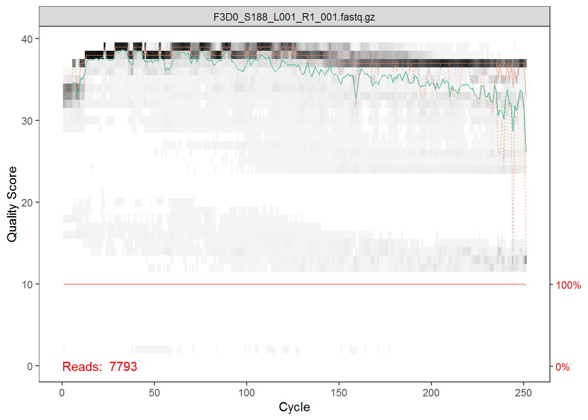
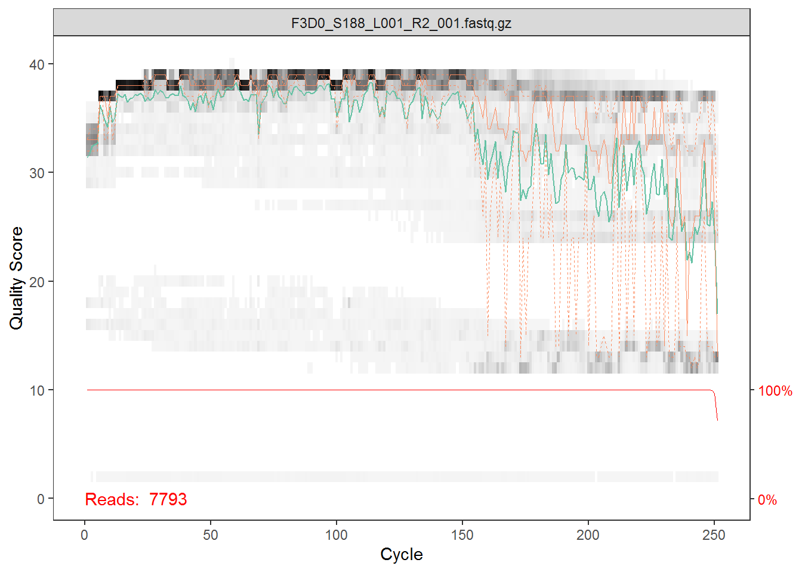

Chapter 4 Amplicon bioinformatics
This section demonstrates the steps of how we can do amplicon bioinformatics: from raw reads to tables. The steps include construction of the raw reads from sequencing result into the table we ought to analyze.
4.1 Libraries
First, we should load the necessary packages. You might also want to install some packages if you haven’t installed them to your machine.
4.2 Dataset
The data we will be using is an raw reads of DNA sequences (amplicons) from the V4 region of the 16S rRNA gene sequenced through Illumina Miseq NGS technology. The data contains DNA samples of microbial communities from a 360 fecal samples, collected from 12 mice over the first year of life. This samples were investigated for analyzing the development and stabilization of the murine microbiome (@Schloss et al., 2012).
As a side note, We will be using some scientific terms that are necessary throughout this book, but it will not be very helpful for us to discuss it in a very deeply manner. Therefore I will try to give a brief explaination about it in each section and leave some link for further readings if you need one. Below is some examples and hopefully it will help you.
The raw reads of a DNA sequence is a result of a sequencing process of the DNA. DNA of a microbial species needs to be sequenced to retrieve the information regarding to it and to store it in a digitilized form. There are various tools for DNA sequencing with the Next Generation Sequencing (NGS) technology being the technology commonly used today. It allows rapid sequencing for a massive load of DNA sequences. Meanwhile, the V4 region stands for the more specific region of the 16S rRNA gene. This also called the “fingerprint gene” for its sequence can explain the identity of microbial species inside the community we ought to analyze.
The data can be downloaded here. The data will be in .tar format and you will need to extract it to obtain the sequences in .fastq.gz (gzip compressed archive) format.
There are 724 files consisted of 362 forward and 362 reverse DNA sequences, each with a standard naming system i.e. x_x_x_x_x. If you are confused about why there are forward and reverse sequences, it’s because DNA is sequenced in two direction. This allows for … Below is the illustration of DNA sequencing and click here for further explanation.
IMAGE
The sequence files are still in its compressed format but luckily most bioinformatics tools have the ability to process the compressed sequence. This is quite convinience as most microbiome analysis deals with large sized data and compressed files are, well, more “compressed”. In the code below we try to tag each files using reverse or forward tag.
## [1] "data/miseq/F3D0_S188_L001_R1_001.fastq.gz"
## [2] "data/miseq/F3D0_S188_L001_R2_001.fastq.gz"
## [3] "data/miseq/F3D1_S189_L001_R1_001.fastq.gz"
## [4] "data/miseq/F3D1_S189_L001_R2_001.fastq.gz"
## [5] "data/miseq/F3D11_S198_L001_R1_001.fastq.gz"
## [6] "data/miseq/F3D11_S198_L001_R2_001.fastq.gz"# search for a pattern in the list
# R1 = DNA forward sequences; R2 = DNA reverse sequences
fnFs <- fns[grepl("R1", fns)]
fnRs <- fns[grepl("R2", fns)]
# check the number of reverse/forward sequences
length(fnFs)## [1] 362## [1] 3624.3 Trimming & Filtering
After we have separate the sequences into reverse/forward, we need to perform data cleaning by trimming & filtering. Raw reads are often have regions with low-quality reads. These reads needs to be trimmed and filtered first for its low quality region before combining it (the reverse and forward sequences) into one DNA sequence. Most Illumina sequencing data shows a trend of decreasing average quality towards the end of sequencing reads (@Callahan et al. 2016).
To know which regions have low quality reads, we can plot it using plotQualityProfile() from dada2 package. dada2 offers various functions for accurate, high-resolution sample inference from amplicon sequencing data. Let’s take the first observation for a sample from each of reverse and forward reads and plot its quality profile.


The plot shows Interpret the graph: cycle, quality score, total reads, a single fastq.gz file for 1 community, count, teal-orange-dashed-black fill mean? also the 0-100 benchmark below?
What is quality scores? how to calculate one? Is there any minimum number of samples to determine which region we should trim? is there any standard trimming procedure for illumina sequences? there should be because there is no way that we have to check each samples, but there should a justification for the number of samples.
Here, the forward reads maintain high quality throughout, while the quality of the reverse reads drops significantly at about position 160. Therefore, we choose to truncate the forward reads at position 245, and the reverse reads at position 160. We also choose to trim the first 10 nucleotides of each read based on empirical observations across many Illumina datasets that these base positions are particularly likely to contain pathological errors.
# creating file path for filtered reads
filt_path <- file.path("data", "filtered")
if(!file_test("-d", filt_path)) dir.create(filt_path)
filtFs <- file.path(filt_path, basename(fnFs))
filtRs <- file.path(filt_path, basename(fnRs))
for(i in seq_along(fnFs)) {
fastqPairedFilter(c(fnFs[[i]], fnRs[[i]]),
c(filtFs[[i]], filtRs[[i]]),
trimLeft=10, truncLen=c(245,
160),
maxN=0, maxEE=2, truncQ=2,
compress=TRUE)
}